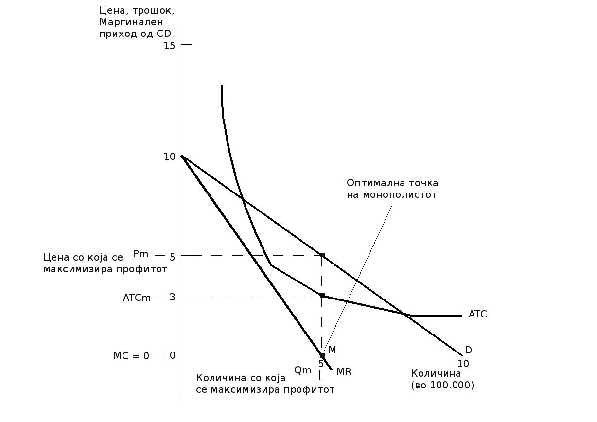

Овој текст прв пат е објавен на 14.05.2009 година. Достапен е на:
http://novica.softver.org.mk/node/446
Ослободување на информациските добра
За промената на пазарните структури и производството како резултат на иновации во правото и технологијата
Новица Наков
Резиме
Развојот на технологијата секогаш предизвикувал економски раст и промени во општеството, но и жестоки дебати за користа и штетите кои настануваат. Со најновите пробиви во компјутерската технологија и софтверот, денес се случува уште едно поместување.
Истовремено, иновациите во правото овозможуваат уште поизразена улога на технолгиите. Ова посебно се однесува на градењето на правни документи над законите за авторските права кои мудро ја преиначуваат намената на самите закони.
Овие активности полека се преточуваат во идеи и модели за нови начини на производство на информациски добра и овој текст пренесува некои од тие нови идеи и се обидува да објасни како досегашните модели за производство на информациски добра се менуваат.
Главниот осврт е на производството на софтвер од причина што поместувањето започнало токму од таму. Но и голем број на други индустрии се судираат со овие промени. Некои од нив повешто се справуваат со нив, а некои пак пружаат отпор. И покрај ова, промените неизбежно се случуваат. Резултатите од тоа, може да се надеваме, ќе бидат корисни за целото општество.
Авторско право
Овој документ е авторско дело на Новица Наков.
Во стилот на Вуди Гурти (http://en.wikipedia.org/wiki/Woody_Guthrie), секој што ќе биде фатен како го копира без моја дозвола, ќе ми биде добар другар. Копирајте го, дистрибуирајте го, објавувајте го. Јас го напишав и тоа беше сѐ што сакав да направам.
За авторот
Новица Наков е економист по образование, со голем интерес за тоа како правото, технологијата и економијата се мешаат и создаваат возбудлива околина за слободниот софтвер и слободната култура. Наков е истакнат член на македонската заедница за слободен софтвер и член на непрофитната организација „Слободен софтвер Македонија“. Неговите други текстови се достапни на: http://www.scribd.com/people/documents/2251543/folder/74647
е-пошта: nnovica@gmail.com
Ако ти имаш јаболко и јас имам јаболко и ги размениме овие јаболка, тогаш и ти и јас сѐ уште ќе имаме по едно јаболко. Но, ако ти имаш идеја и јас имам идеја и ги размениме овие идеи, тогаш секој од нас ќе има две идеи.
~ Џорџ Бернард Шо
Овој текст е преглед на некои од современите идеи што се поврзани со производството и дистрибуцијата на информациските добра. Поради тоа што моето познавање на темата е ограничено1, текстот не се обидува да изнесе значајни новости, туку само да презентира и евентуално сублимира дел од овие идеи, така што би му биле јасни на секој читател кој има основни познавања од економските и правните концепти поврзани со монополите и авторските права. Истовремено, се надевам дека ќе биде доволно интересен за да поттикне понатамошно истражување на темата.
Текстот започнува со презентирање на вообичаената економска анализа за производството на информациски добра и ги објаснува правните механизми без кои таквото производство не би било можно во формата што денес ја знаеме како доминантна. Потоа, објаснува кои се иновациите што се случиле во правото и технологијата (или како што вели Лоренс Лесиг во правниот код и во програмерскиот код2) и како тие иновации го менуваат пазарот и производството, посебно на софтверот. На крај, дава краток преглед на случувањата во другите области на производство на информациски добра каде што се случуваат исти или слични поместувања.
Секое добро кое се произведува во светот содржи информации. Сепак, не велиме за сите добра дека се информациски добра. На пример, во производството на едно столче нужно се потребни информации – знаењето на столарот се отелотворува во предметот што тој го изработува. Вредноста на столчето ќе зависи од тоа знаење, како и од материјалите кои се употребени во неговата изработка. Но, никој нема да рече дека столчето е информациско добро.
Информациските добра се добра чија вредност произлегува од информациите што во нив се отелотворени, а не од нивните физички карактеристики (Krugman and Wells 520). Еден компакт-диск со музика содржи информации кои ја даваат неговата вредност. Материјалот од кој е направен дискот не вреди речиси ништо.
Освен музиката, во оваа група на добра се вбројуваат и филмовите, литературата, компјутерскиот софтвер, лековите и, до некаде, голем број пронајдоци. Било за забава или за преживување, сите овие играат важни улоги во секојдневниот живот на луѓето. Начинот3 на кој денешните влади и меѓународни организации го третираат производството и продажбата на сите овие добра е извор на дебати, но и на отворено непријателство помеѓу сиромашните и богатите земји, а често и помеѓу сиромашните и богатите слоеви во една земја.
Економистите го разгледуваат производството на информациски добра како тоа да се остварува во монополски услови. Ова е така бидејќи правата за производство и дистрибуција традиционално му припаѓаат на еден понудувач.
Стандардната економска анализа на производството и продажбата на информациските добра, најдена во вообичаените американски учебници, вели вака (Krugman and Wells 519-521):
Едно информациско добро, како што е музичка снимка, има високи фиксни трошоци и ниски маргинални трошоци (речиси еднакви на нула). Ова ситуација е слична на онаа со природниот монопол4.
Графикот (на слика 1) ја прикажува структурата на трошоци со која се соочува музичката компанија што треба да издаде еден компакт диск, како и кои се последиците од тоа. Лесно ќе видиме дека компанијата ќе настапи од позиција на монопол.

Слика 1: Количеството со кое се максимизира профитот на информациско добро
Количеството со кое монополот ќе го максимизира својот профит се наоѓа во точката на пресек на маргиналните трошоци и маргиналните приходи. Тоа се случува при производство на 500.000 примероци.
Ако фиксните трошоци за производство на снимката се 1,5 милиони, а маргиналните трошоци се 0, цената по која монополот ќе продава при количество со кое го максимизира профитот е 5 парични единици за еден диск, а просечните вкупни трошоци за истото се 3 п.е. Тоа значи дека профитот што се остварува од секое продадено CD изнесува 2 п.е. Доколку цената е 0 количеството што ќе се бара ќе биде 1 милион, а доколку цената е 10 п.е. тогаш нема да се продаде ниту една копија од дисковите. Табелата што следи дава појасен приказ на движењето на трошоците за производство на доброто, побарувачката за доброто и постигнувањето на оптималната количина на производството.
|
Побарувачка |
Трошоци за производство |
|||
|
Цена на 1 CD во парични единици |
Побарувачка (во 100.000) |
Понуда (во 100.000) |
Фиксни трошоци – милиони п.е. |
Просечни вкупни трошоци во п.е. |
|
10 |
0 |
0 |
1,5 |
- |
|
9 |
1 |
1 |
1,5 |
15 |
|
8 |
2 |
2 |
1,5 |
7,5 |
|
7 |
3 |
3 |
1,5 |
5 |
|
6 |
4 |
4 |
1,5 |
3,75 |
|
5 |
5 |
5 |
1,5 |
3 |
|
4 |
6 |
6 |
1,5 |
2,5 |
|
3 |
7 |
7 |
1,5 |
2,14 |
|
2 |
8 |
8 |
1,5 |
1,88 |
|
1 |
9 |
9 |
1,5 |
1,67 |
|
0 |
10 |
10 |
1,5 |
1,5 |
Табела 1: Трошоците за производство, оптималната количина и побарувачката за информациско добро
На овој начин економистите објаснуваат како една музичка група и нејзината издавачка компанија одлучуваат на пазарот да понудат нов албум. Тие пресметуваат дека за да го снимат албумот ќе треба да платат 1,5 милиони п.е. (за студио, инструметни, музичари и сл.) и претпоставуваат дека дистрибуцијата ќе ги чини речиси нула. Така, тие ќе го максимизираат профитот со количество од 500.000 парчиња (што е под оптимумот) и цена од 5 п.е. (што е над оптимумот), притоа правејќи вкупен профит од 1.000.000 п.е.
Со оглед на тоа дека секој изведувач е монопол сам за себе (можете да го купите неговиот албум само од него, т.е. од неговата издавачка куќа), при производството на музика задолжително ќе се остварува екстра профит и задолжително ќе има загубен вишок.
Ако правилата кои важат во совршена конкуренција (дека цената е еднаква на маргиналниот трошок) се применат овде, тогаш компанијата ќе нема сметка да го произведува дискот, бидејќи маргиналните трошоци се нула. Тогаш вкупните загуби во вредност, и за купувачите и за производителите, ќе бидат значително поголеми.
Горната анализа го дава одговорот на прашањето зошто еден музички диск чини десетина евра во продавница, или зошто еден софтверски пакет чини стотина долари. Одговорот на прашањето од каде произллегува таа цена, се наоѓа во правната рамка која е овозможена од државата.
Музичарите или нивните издавачи (и сите други производители на информациски добра) се монополисти. Нивниот монопол произлегува од правила пропишани со закон, односно од одлуката на државата или општеството, производството на вакви добра да биде регулирано на посебен начин5.
Уставот на САД е еден од најјасните документи кои ја одредуваат оваа состојба:
Конгресот ќе има моќ да го промовира развојот на науката и корисните уметности, преку обезбедување на ексклузивно право на авторите и пронаоѓачите над нивните пишувани дела и откритија, за определено време.6
Ваквото правно третирање на создавањето уметност и пронајдоци е причината зошто секој музичар7 е монопол сам за себе. Во основа, тој што ги поседува правата на некое дело е единствен кој што може да го изведува, продава, дистрибуира, или да одреди кој друг може да ги прави овие работи. Бидејќи уметничките дела и пронајдоците се различни (а покрај нив има и други, понови видови на информациски добра), правниците смислиле различни форми кои го регулираат нивното производсто и продажбата. Двете најпознати се: авторските права и патентите. Двете му даваат на авторот, односно пронаоѓачот привремен монопол врз располагањето со изумот, односно делото кој тој го создал. Тој монопол за патентите обично изнесува околу 20 години, а за авторските права и до 90 години по смртта на авторот.
Годините на траење на овие воглавно се резултат на лобирањето на големите компании, кои се и носители на најголем дел од правата за профитабилните информациски добра. На пример, последните неколку продолжувања на траењето на авторските права во САД се постигнати благодарение на лобирањето на големите корпорации за забава, а меѓу нив и корпорацијата „Дизни“. При последното продолжување законот беше наречен и „Мики маус закон за авторски права8“, бидејќи конгресот го продолжи траењето на роковите за авторски права, токму тогаш кога требаше да истече авторското право над познатиот нацртан глушец. Научната анализа од друга страна вели дека оптималното траење на авторските права е околу 14 години и наговестува дека „постои значајна улога за законодавците да ја зголемат општествената благосостојба со намалување на траењето на авторските права“ и дека „постоечките периоди на траење не треба да бидат продолжувани“ (Pollock 27).
Уште едно масивно поместување во денешните закони, покрај создавањето на монопол, е што нивната регулација е обемна и денес тие го ограничуваат однесувањето на сите граѓани на едно општество, на сите корисници на авторски дела. Во својот зачеток, во 18-тиот век, тие служеле само за регулирање на индустријата која тогаш се занимавала со печатење книги. Треба да разбереме и во какви услови се појавиле првите закони за авторски права. Имено, технологијата за печатење што тогаш се појавила во Европа, била премногу скапа, па само неколку луѓе можеле да си дозволат да ја поседуваат. Затоа, за да се поттикне печатењето на книги, односно инвестирањето во таквата машина, кралот им дал законска заштита на печатарите со што тие станале единствените што имаат право да печатат книги. Но, сите други активности поврзани со книгите (или денес со другите авторски дела) не биле регулирани. На пример, секој можел јавно да изведува претстава според некоја книга без да бара дозвола. Денес пак, има многу малку работи што можеме да ги правиме со некое дело без да побараме дозвола од оној кој ги има авторските права.9
Вообичаеното објаснување дека овие закони постојат за да го поттикнат развојот и создавањето на нови дела, исто така е предмет на жестоки дебати, меѓу другото, бидејќи не може да објасни како или зошто луѓето создавале и твореле пред индустриската револуција.
И покрај ова економистите главно сметаат дека привремениот монопол, иако неефикасен, е потребен за да се оствари напредок и иновации. Но, треба да запомниме дека ова е монопол кој има законска позадина. Тој е спроведлив и одржлив само поради законот, односно, во денешно време, само таму каде што тој закон се почитува.
Индустриската револуција ги напишала авторските права, а дигиталната се заканува дека ќе ги избрише.
Со појавата на компјутерите се појавува и првото информациско добро што го доведува во прашање овој систем – софтверот. Накратко, кога софтверот се појавил, на самиот почеток, бил третиран како научно знаење и според тоа прашањето за авторските права не се поставувало – научниците меѓу себе го разменувале софтверот. Потоа се појавиле компаниите кои сфатиле дека може да го продаваат и со помош на законите за авторски правата ја регулирале неговата продажба и дистрибуција. Потоа некои компании одлучиле да патентираат одредени делови од софтверот. Тоа им успеало во САД, но не и во Европа, или барем не за сега. Сето ова се случувало во последните 30-ина години. Речиси никој од активните учесници во оваа компјутерска револуција не претпоставил дека работите ќе се одвиваат на начин како што се одвиваат.
Но, многу пред компаниите да го зграпчат софтверот, еден научник од Институтот за технологија во Масачусетс, Ричард Сталман, соочен со првите пречки во пишувањето на софтвер, започнал проект за нов оперативен систем и ја создал правната рамка со која тој ќе биде заштитен10. Приказната за тоа како Сталман одлучил да го започне овој проект е интересна, а неговата проникливост, за тоа кон што ќе води развојот на софтверот доколку со него доминираат компании кои ќе го штитат својот производ со помош на авторските права, е зачудувачка. За она што денес го знаеме како слободен софтвер заслужна е, покрај очигледно огромните напори на голем број програмери, генијалната Општа јавна лиценца што ја срочил Сталман. Оваа лиценца овозможува софтверот што еднаш ќе биде напишан и објавен според условите пропишани со неа, засекогаш да остане таков11.
За да го разбереме овој концепт, мора малку да навлеземе во тоа како се произведува софтвер. Софтверот се пишува на јазик кој го разбираат програмерите, а во некои случаи и луѓето на кои тоа не им е професија. Како таков тој е пишано дело и подлежи на законите за авторски права. Штом ќе биде напишан, тој се преведува во јазик што го разбираат компјутерите. Таков тој се продава на корисниците на компјутери, но всушност не се продава, туку се дава под лиценца12 што е главно базирана на законите за авторски права, а понекогаш и на законите за облигациони односи. Лиценцата е таа што ги одредува условите под кои имате право да го користите софтвер. За воопшто да можете да користите некој софтвер, прво мора да се сложите со сите услови.
Сталман, водејќи се од своите морални вредности, сфатил дека корисниците треба да имаат пристап до софтверот и во јазикот кој што го напишале програмерите, а не само до оној преведениот. Освен тоа тој заклучил дека нема ништо лошо во тоа да му го позајмите софтверот што сте го купиле на Вашиот сосед, слично како што што го позајмувате алатот, или пак да го измените, слично како што може да ја прилагодите каросеријата на Вашата кола по Ваш вкус. Ова ја сумира Општата јавна лиценца на неправнички јазик. Нејзината иновативност како правен документ е во тоа што иако се базира на законот за авторски права, таа речиси целосно ја преиначила неговата намена.
На економски јазик, тоа значи дека оној што е носител на авторските права веќе не е единствениот што има право да го продава и дистрибуира софтверот, и според тоа анализата на производството на информациски добра како монопол повеќе не е единствен начин да се гледа на овие добра.
Новонастаната ситуација предизвикала пораст на бројот на компаниите кои нуделе еден ист софтвер што претходно бил издаден под условите од Општата јавна лиценца. Пазарната структура се сменила. Од еден понудувач кој имал големо влијание врз цената и единствен производ, на пазарот се појавиле повеќе понудувачи со мало или никакво влијание на цената и со хомоген или сосем малку диференциран производ. Бариерите за влез исчезнале. Она што претходно изгледало на монопол, сега се претворило во конкурентен пазар.
Да речеме дека сакаме да отвориме компанија која ќе работи на пазарот за оперативни системи. Откако ќе закупиме простор, купиме опрема и вработиме луѓе, ни преостанува уште да го создадеме производот. А тој е веќе готов. Со неколку клика на Интернет можеме да го земеме најновото Линукс јадро13 и уште веднаш истото да го понудиме на нашите купувачи. Ова може да го направи било кој што ќе ја има истата идеја, па затоа ние не можеме да наплаќаме премногу за нашата работа. Најверојатно ќе мораме да ја прифатиме цената што веќе е воспоставена на пазарот, исто како и сите други. Така нема да остваруваме екстра профит.
Промените на пазарот не се случиле преку ноќ. На компаниите им требало време да смислат соодветни бизнис модели за да работат во новото опкружување. На крај сепак се прилагодиле и голем дел од нив станале гиганти во својот сектор14. Бизнисот одел добро. Крајниот резултат е поефикасно производство, пониски цени и повеќе избор за корисниците.
Очигледно, за воопшто да бидеме дел од овој пазар веќе требало да постои некаква база на софтвер кој ние слободно ќе можеме да го продаваме и дистрибуираме понаму. Општата јавна лиценца на Ричард Сталман решила само половина од проблемот со монополското однесување на компаниите создавачи на информациски добра. Како што гледаме, ништо од ова не објаснува зошто било кој што ќе произведе некој софтвер би го дал истиот под оваа лиценца, кога сосема комотно може да си го задржи и да остварува значителен екстра профит.
Сталман го практикувал решението за оваа замка уште во раните денови на проектот ГНУ. Тој одлучил да го напише целиот оперативен систем сам, иако не требало многу време да му се приклучат и други луѓе. Неговите мотиви за оваа постапка биле силни, а тој бил мошне талентиран програмер, па не му преостанувало ништо друго освен да почне да пишува софтвер.
Но беа потребни дваесетина години за некој да го објасни овој нов облик на производство. Тоа го стори Јохаи Бенклер од универзитетот Хардвард со своите две дела: есејот „Пингвинот на Коас“ и подоцна опширната книга „Богатството на мрежите15“. Во нив Бенклер објаснува дека покрај двата познати модела на производство, оној на фирмите и оној на пазарот, во новата дигитално вмрежена околина се појавува и трет модел. Тој го нарекува него „commons-based peer production“ или производство на заеднички добра помеѓу врсници. Според Бенклер овој модел има предност пред другите два модела кога „објектот на производство е информации или култура и кога физичкиот капитал потребен за тоа производство, како што се компјутерите и комуникациските можности, е широко распространет, а не концентриран“. Неговата централна карактеристика, вели Бенклер, е тоа дека групи на поединци успешно соработуваат на обемни проекти, следејќи различни мотиви и општествени сигнали, наместо пазарните цени или наредбите од менаџментот.16
Така сложувалката е комплетна. Денес, речиси без никакви тешкотии, може да се објасни зошто неколку програмери почнуваат да пишуваат еден софтвер (производство), зошто одлучуваат да го издадат под лиценца каква што е Општата јавна лиценца (дистрибуција), и која е сета корист од тоа17. Но, што е со другите индустрии за информациски добра?
За добро на сите корисници на компјутери, иако тоа често не се гледа, софтверот го најде својот пат надвор од монополските ограничувања. Денешниот Интернет не би можел да постои без слободниот софтвер. Енциклопедиите исто така добија свој слободен предводник во Википедија18. Слободната енциклопедија веќе е најголемата на светот, а истражувањата велат дека информациите кои ги содржи се речиси исто толку точни колку и оние во Британика19.
Слична патека почнуваат да следат и голем дел од уметностите, или барем оние дигиталните. И кај нив физичкиот капитал што е потребен е широко достапен и ефтин – денешните компјутери се мали машини за печатење, мали студија за снимање или монтирање – а Интернетот ја прави соработката можна и на огромни далечни, истовремено нудејќи бесконечен изложбен простор каде сите дела може да се објавуваат или прикажуваат.
Сепак кога станува збор за производството на култура уште не постои консензус што е тоа слободна култура20 денес, односно што треба таа да претставува. Но благодарение на неуморните напори на уште еден харвардовец, Лоренс Лесиг, денес постои платформа со името Creative Commons, која меѓудругото обезбедува збир од правни документи што им овозможуваат на уметниците и авторите да ги објавуваат своите дела под услови што најлесно можат да се опишат како „некои права задржани21“ наместо вообичаеното „сите права задржани“, што е значаен исчекор кон ослободување на културата. Дека напорите што ги прават луѓето поврзани со Creative Commons не се залудни покажува и тоа што некои од големите имиња на музичкиот бизнис почнуваат да издаваат на начини различни од класичните дискови, па дури и прифаќаат некои од лиценците на Creative Commons22. Истовремено, водечките издавачки и продуцентски куќи, за разлика од нивните софтверски еквиваленти, сѐ уште се длабоко заглавени во стариот бизнис модел и водат војна со „пиратите“23.
Конечно и биологијата добива своевидна децентрализација. Како што известува New Scientist24, благодарение на ниските цени на определени апарати кои можат да се користат во лабораторија, сега секој кој е заинтересиран може во својот дом да направи сопствена лабораторија. Иако е премногу рано да се зборува кој ќе биде исходот од ваквите активности, сигурно може да предвидиме дека во домашните лаборатории, покрај чудни експерименти ќе се изведуваат и корисни истражувања од кои може да се родат значајни пронајдоци. Ако кон ова додадеме проекти како целосно децентрализираната потрага по лек за ракот, маларијата или Алцхајмеровата болест25 и тоа го помножиме со неколку години забрзан развој, ќе добиеме целосно променета индустрија за лекови. Ова е важно затоа што на едно сосема човечко ниво привремениот монопол над лековите како информации значи многу изгубени животи во земјите во развој26.
Но и тоа не е сѐ. Денес веќе постојат гласни предлози насочени кон Светската трговска организација за воведување на систем сличен на GATS (Општиот договор за трговија и услуги при СТО), кој би функционирал така што ќе поттикнува споделување и обврзувачка соработка меѓу земјите во производство на јавни добра. Во основа предлогот би значел пренесување на механизмите на Општата јавна лиценца на многу пошироко поле на дејствување. Оваа храба идеја му припаѓа на Џејмс Лов од Knowledge Ecology International27.
Информациските добра играат сѐ позначајна улога во денешното општество. Затоа прашањето како со нив ќе располагаат луѓето исто така е многу важно. Го видовме стандардниот модел кој го објаснува сегашниот систем на производство на информациски добра. Компаниите го сакаат бидејќи им овозможува екстра профит, а економистите мислат дека тој е доволно ефикасен. Сепак, развојот на новите технологии предизвикува огромни поместувања во начинот на производство и дистрибуција на информации. Исто како што една технологија е причината поради која денес имаме авторски права, една друга технологија може да биде причината зошто тие повеќе не се потребни.
Промените кои се случуваат во општеството започнуваат со луѓето кои се директно вклучени во производство на информациски добра. Потребно е време, но како што видовме и академскиот свет се приклучува и прилично успешно ги објаснува новите промени нудејќи и нови модели по кои развојот би можел да продолжи. Компаниите главно бавно учат. Оние кои се занимаваат со софтвер можат и да се пофалат со нивното учество во новите производствени модели, но тие се многу години понапред од оние во забавната индустрија кои сѐ уште сметаат дека треба да водат војни со корисниците. Последните, на кои уште се чека да реагираат на овие промени, се законодавците и затоа постојат многу држави во светот, меѓу кои и нашата, каде огромен број граѓани секојдневно и често ненамерно ги кршат законите за авторски права.
Брилијантните правни иновации, главно видени во Општата јавна лиценца, овозможуваат лесно заобиколување на овој проблем и ние сме чекор поблиску до послободен економски простор, но и до послободно општество.
Benkler, Yochai. "Coase's Penguin, or, Linux and the Nature of the Firm." The Yale Law Journal 112/3 (December 2002): 369-446. <http://www.yale.edu/yalelj/112/BenklerWEB.pdf>, (посетено на 09.04.2009 г.).
Krugman, Paul, and Robin Wells. Microeconomics. New York: Worth Publishers, 2005. Print.
Lesig, Lorens. Slobodna kultura. Belgrad: Sluzbeni glasnik, 2006. Print.
Lessig, Lawrence. Kod i drugi zakoni kiberprostora. Zagreb: Multimedijalni institut, 2005. Print.
Фити, Таки, и Владимир Филиповски. Основи на микроекономијата. Скопје: Економски факултет, 1999. Печатена.
Pollock, Rufus. „Forever Minus a Day? Some Theory and Empirics of Optimal Copyright“. Cambridge University (June, 2007) <http://www.rufuspollock.org/economics/papers/optimal_copyright.pdf> (посетено на 09.04.2009 г.).
Williams, Sam. Free as in Freedom. O'Reilly, 2002. <http://oreilly.com/openbook/freedom/>
1Треба да се прибележи дека авторот на овој текст ѝ припаѓа на групата која, во најмала рака, за заеднички го има ставот дека е потребна реформа на системот за авторски права, бидејќи тој му пречи на современото општество на различни начини. Во таа смисла, во текстот можеби може да се насети наклонетост кон ова гледиште, иако авторот се трудеше да остане колку што е можно неутрален и објективен во ова излагање.
2Во својата книга „Код и други закони на киберпросторот“, Лесиг опширно ја објаснува врската помеѓу законите (анг. Legal code) и програмерскиот код (анг. Code). Една од главниоте поенти на оваа книга е дека во киберпросторот, кодот е законот кој го одредува целокупното однесување на сите учесници.
3Ова пред сѐ се однесува на рестриктивните закони за авторските права кои се усогласуваат на светско ниво, но и на новите правни решенија кои со помош на технологија се произведуваат ограничувања онаму каде авторските права не можат (како на пример американскиот DMCA закон (http://www.copyright.gov/legislation/dmca.pdf - посетено на 14.05.2009 г.). Како што ќе видиме подоцна, некои од земјите одлучуваат да ги занемарат различните закони, особено кога е во прашање животот на нивните граѓани.
4Традиционално за природен монопол се сметаат производството, продажбата и дистрибуцијата на добра како што се електричната енергија или водата. Кај нив, исто така фиксните трошоци се високи, а маргиналните се ниски, иако никогаш не се толку занемарливи за да речеме дека се еднакви на нула.
5За прв закон за авторски права кој правата им ги доделува на авторите се смета Статутот на Ен донесен во 1709. (според англиската кралица во чие време бил донесен). Целиот текст на овој закон се наоѓа на: http://en.wikisource.org/wiki/Statute_of_Anne (посетено на 08.04.2009 г.).
6The Congress shall have Power To promote the Progress of Science and useful Arts, by securing for limited Times to Authors and Inventors the exclusive Right to their respective Writings and Discoveries; - од http://www.usconstitution.net/const.html (посетено на 08.04.2009 г.).
7Во реалноста многу малку музичари се всушност монополисти. Ова е така бидејќи законите најчесто велат дека сите работи што произлегуваат од авторските права ги има оној кој што е носител на правото, а тој не мора да биде и авторот и најчесто тоа е така. Носители на правата се издавачките куќи, филмските студија и слично.
8Видете повеќе на: http://www.mickeynews.com/News/PrintStory.asp_Q_id_E_1084Copyright_A_cat_E_DC (посетено на 10.04.2009 г.).
9За подетален преглед на историјата на авторските права, погледајте на http://questioncopyright.org/promise (посетено на 14.05.2009 г.).
10Во 1984, Ричард Сталман го основал проектот ГНУ, проект за создавање на слободен оперативен систем. Овој софтвер со комбинирање со јадрото напишано од Линус Торвалдс, го прави моќниот и современ оперативен систем со име ГНУ/Линукс. Популарно е познат само како Линукс, или како некоја од дистрибуциите кои се произведуваат како Убунту или Федора. Видете повеќе на: http://oreilly.com/openbook/freedom/ (посетено на 10.04.2009 г.).
11Целиот текст на Општата јавна лиценца (GNU GPL) во нејзината денешна верзија 3 е достапен на: http://www.gnu.org/copyleft/gpl.html (посетено на 08.04.2009 г.).
12Кога купувате софтвер, вие всушност плаќате за лиценца. Општата јавна лиценца е бесплатна.
13Јадрото Линукс (Linux kernel) е еден од водечките софтверски производи кои се создаваат децетнрализирано, преку Интернет и со учество на илјадници програмери и голем број на компаниии од целиот свет. Софтверот е достапен на: http://kernel.org (посетено на 22.04.2009 г.).
14На пример, RedHat (http://redhat.com/) e американска компанија што е една од најголемите во денешната софтверска индустрија, а нејзината главна дејност е нудење услуги поврзани со Линукс и друг слободен софтвер.
15Книгата на Јохаи Бенклер „Богатството на мрежите“ е во целост достапна на интернет на следнава адреса: http://cyber.law.harvard.edu/wealth_of_networks/Main_Page (посетено на 09.04.2009 г.).
16Benkler, Yochai (2002) "Coase's Penguin, or, Linux and the Nature of the Firm." The Yale Law Journal 112(3) страница 1 (достапно на http://www.yale.edu/yalelj/112/BenklerWEB.pdf, посетено на 09.04.2009 г.).
17Двете главни користности кои ги нуди слободниот софтвер се однесуваат на програмерите и на корисниците. Првите имаат пристап до кодот што значи дека можат да го проучуваат во својата изворна форма и да го подобруваат без да бидат соочени со законски пречки. За корисниците најголемата корист е тоа што избегнуваат зависност од еден понудувач (vendor lock-in).
18http://en.wikipedia.org за енциклопедијата на англиски јазик или http://mk.wikipedia.org за македонски јазик.
19Истражувањето на Nature, интернационалниот британски неделник за наука, вели дека Википедија е речиси исто толку точна колку и Британика. Истражувањето е од декември 2005 година (http://www.nature.com/nature/journal/v438/n7070/full/438900a.html посетено на 09.04.2009 г.). За краток опис на резултатите видете на http://news.bbc.co.uk/2/hi/technology/4530930.stm (посетено на 09.04.2009 г.).
20За разлика од слободниот софтвер кој е точно дефиниран, слободна култура сѐ уште не е прецизно дефинирана иако за тоа постојат некои обиди, како на пример дефиницијата за слободни дела од областа на културата: http://freedomdefined.org/Definition (посетено на 22.04.2009 г.).
21„Некои права задржани“ е ги опишува лиценците на Creative Commons кои им овозможуваат да задржат некои од правата кои им следат според законот и притоа да дозволат некои вообичаено забранети активности во врска со нивните дела. На пример, некој автор може да дозволи неговото дело да се употребува слободно во некормерцијални цели. Повеќе за лиценците и концептот на Creative Commons има на http://creativecommons.org/ (посетено на 06.05.2009).
22Последното големо име од музиката кое издаде свои албуми под лиценци на Creative Commons е бендот Nine Inch Nails. Повеќе на: http://ghosts.nin.com/main/faq (посетено на 09.04.2009 г.).
23Последен пример од оваа борба е тужбата на некои Холивудски студија против ПајретБеј. За повеќе информации, видете на http://torrentfreak.com/the-pirate-bay-trial-the-verdict-090417/7837/ (посетено на 14.05.2009 г.).
24Rise of the garage genome hackers, http://www.newscientist.com/article/mg20126881.400-rise-of-the-garage-genome-hackers.html?page=1 (посетено на 09.04.2009 г.).
25Rosetta@home е дистрибуиран систем за истражување кој ја користи компјутерската моќ на сите компјутери поврзани на Интернет чии корисници ќе одлучат да учествуваат во проектот. Повеќе на: http://boinc.bakerlab.org/rosetta/ (посетено на 09.04.2009 .г.)
26Соочен со епидемија на СИДА, Бразил беше првата држава во светот која одлучи да ги игнорира патентите на лековите за СИДА на големите фармацефтски компании и сама да произведува генерички лекови. Рекламата на бразилската влада: „Домашното производство на многу од лековите што се користат во анти-СИДА коктелите не е декларација на војна против фармацевтските компании. Тоа е просто борба за живот.“ - најдобро ја опишува ситуацијата на Бразил. Повеќе на: http://archives.cnn.com/2001/WORLD/americas/08/14/brazil.AIDS/ (посетено на 09.04.2009 г.).
27Повеќе на: http://www.linuxjournal.com/content/building-richard-stallmans-greatest-achievement (посетено на 09.04.2009 .г.)